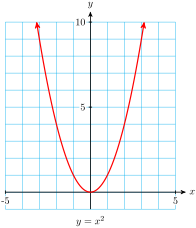
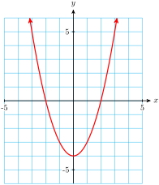
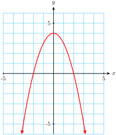
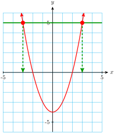
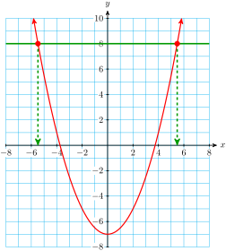
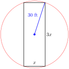

So far you have learned how to solve linear equations. In linear equations, the variable cannot have any exponent other than 1, and for this reason such equations are often called first-degree. Now we’ll consider second-degree equations, or quadratic equations. A quadratic equation includes the square of the variable.
Some familiar geometric formulas are quadratic equations, such as the formula for the area of a circle, \(A = \pi r^2\text{.}\)
Definition3.1.1.Quadratic Equation.
A quadratic equation can be written in the standard form
\begin{equation*}
ax^2+bx+c=0
\end{equation*}
where \(a,~b,~\) and \(c\) are constants, and \(a\) is not zero.
Checkpoint3.1.2.QuickCheck 1.
We would like to be able to solve quadratic equations, use them in applications, and graph quadratic equations in two variables. Let’s begin by considering some simple examples.
Subsection3.1.2Graphs of Quadratic Equations
The simplest quadratic equation in two variables is
\begin{equation*}
y=x^2
\end{equation*}
Its graph is not a straight line, but a curve called a parabola, shown in the figure. You can verify the table of values below for this parabola.
\(x\)
\(-3\)
\(-2\)
\(-1\)
\(0\)
\(1\)
\(2\)
\(3\)
\(y\)
\(9\)
\(4\)
\(1\)
\(0\)
\(1\)
\(4\)
\(9\)

Caution3.1.3.
Be careful when squaring negative numbers. To evaluate the square of a negative number on a calculator, we must enclose the number in parentheses to show that the negative sign is included in the expression to be squared. For example,
We make a table of values and plot the points. \(~\alert{\text{[TK]}}\) The graph is shown below.
\(x\)
\(-3\)
\(-2\)
\(-1\)
\(0\)
\(1\)
\(2\)
\(3\)
\(y\)
\(5\)
\(0\)
\(-3\)
\(-4\)
\(-3\)
\(0\)
\(5\)

Checkpoint3.1.5.Practice 1.

Subsection3.1.3Solving Quadratic Equations
How can we solve a quadratic equation? Consider the equation
\begin{equation*}
x^2-4=5
\end{equation*}
First, we can solve it graphically. Look again at the graph of \(~y=x^2-4~\) from Example 1.

We would like to find the \(x\)-values that make \(y=5\text{.}\) The horizontal line \(y=5\) intersects the graph at two points with \(y\)-coordinate 5, and their \(x\)-coordinates are the solutions of the equation. Thus, there are two solutions, namely \(3\) and \(-3\text{.}\)
Algebraically, we solve the equation as follows. \(~\alert{\text{[TK]}}\)
First, we isolate the variable. We add 4 to both sides, yielding \(~x^2=9\text{.}\)
Because \(x\) is squared in this equation, we perform the opposite operation, or take square roots, in order to solve for \(x\text{.}\)
\begin{align*}
x^2 \amp = 9 \amp \amp \blert{\text{Take square roots of both sides.}}\\
x \amp = \pm \sqrt{9} = \pm 3 \amp \amp \blert{\text{Remember that every positive number}}\\
\amp \amp \amp \blert{\text{has two square roots.}}
\end{align*}
The solutions are \(3\) and \(-3\text{,}\) as we saw on the graph.
Note3.1.6.
Notice that we have found two solutions for this quadratic equation, whereas linear equations have at most one solution. (Sometimes they have no solution at all.) We shall see that every quadratic equation has two solutions, which may be equal. The solutions may also be complex numbers, which we’ll study in Chapter 4.
The figure shows the graph of \(~y=\dfrac{1}{2}x^2-7.\)

We would like to find the \(x\)-values that make \(y=8\text{.}\) The horizontal line \(y=8\) intersects the graph at two points with \(x\)-coordinates approximately \(5.5\) and \(-5.5\text{.}\) These are the solutions of the equation.
Algebraically, we solve the equation as follows.
First, we isolate the variable. We add 7 to both sides, then multiply by 2, yielding \(~x^2=30\text{.}\)
Because \(x\) is squared in this equation, we perform the opposite operation, or take square roots, in order to solve for \(x\text{.}\)
\begin{align*}
x^2 \amp = 30 \amp \amp \blert{\text{Take square roots of both sides.}}\\
x \amp = \pm \sqrt{30} \amp \amp \blert{\text{Remember that every positive number}}\\
\amp \amp \amp \blert{\text{has two square roots.}}
\end{align*}
We use a calculator to find that \(\sqrt{30}\) is approximately 5.477, or about 5.5, as we saw on the graph.
Caution3.1.8.
Many square roots are irrational numbers, which means that their decimal form never ends. When we round off the decimal form we have an approximation to the square root, but not its exact value. It is important to make a distinction betweeen exact values and decimal approximations.
For the example above, the exact solutions are \(\pm \sqrt{30}\text{.}\)
The values from the calculator, \(\pm 5.477\text{,}\) are decimal approximations to the solutions, rounded to thousandths.
Checkpoint3.1.9.QuickCheck 2.
Subsection3.1.4Extracting Roots
We can now solve quadratic equations of the form \(~ax^2+c = 0~\text{,}\) where the linear term \(bx\) is missing, by isolating \(x\) on one side of the equation, and then taking the square root of each side. This method for solving quadratic equations is called extraction of roots.
Extraction of Roots.
To solve a quadratic equation of the form
\begin{equation*}
ax^2+c=0
\end{equation*}
Isolate \(x\) on one side of the equation.
Take the square root of each side.
Checkpoint3.1.10.Practice 2.
In the next Example, we compare the steps for evaluating a quadratic expression and for solving a quadratic equation.
Example3.1.11.
Tux the cat falls off a tree branch 20 feet above the ground. His height \(t\) seconds later is given by \(h=20-16t^2\text{.}\)
How high is Tux above the ground 0.5 second later?
How long does Tux have to get in position to land on his feet before he reaches the ground?
Solution.
We evaluate the formula for \(t=0.5\text{.}\) We substitute \(\alert{0.5}\) for \(t\) into the formula, and simplify.
\begin{align*}
h \amp= 20-16(\alert{0.5})^2 \amp \amp \blert{\text{Compute the power.}}\\
\amp = 20-16(0.25) \amp \amp \blert{\text{Multiply, then subtract.}}\\
\amp = 20-4=16
\end{align*}
Tux is 16 feet above the ground after 0.5 second. You can also use your calculator to simplify the expression for \(h\) by entering
\(\qquad\qquad 20\)-\(16\)×\(0.5\)x^2ENTER
We would like to find the value of \(t\) when Tux’s height, \(h\text{,}\) is zero. We substitute \(h=\alert{0}\) into the equation to obtain
Only the positive solution makes sense here, so Tux has approximately 1.12 seconds to be in position for landing.
A graph of the Tux’s height after \(t\) seconds is shown below. The points corresponding to parts (a) and (b) are labeled.
Subsection3.1.5Geometric Formulas
The formulas for the volume and surface area of some everyday objects, such as cylinders and cones, involve quadratic expressions. We can use extraction of roots to solve problems involving these objects.
Formulas for Volume and Surface Area.
Example3.1.12.
The volume of a can of soup is 582 cubic centimeters, and its height is 10.5 centimeters. What is the radius of the can, to the nearest tenth of a centimeter? \(~\alert{\text{[TK]}}\)
Solution.
The volume of a cylinder is given by the formula \(V=\pi r^2h\text{.}\) We substitute \(\alert{582}\) for \(V\) and \(\alert{10.5}\) for \(h\text{,}\) then solve for \(r\text{.}\)
The radius of the can is approximately 4.2 centimeters.
Checkpoint3.1.13.Practice 3.
Subsection3.1.6Solving Formulas
Sometimes it is useful to solve a formula for one variable in terms of the others. You might want to know what radius you need to build cones of various fixed volumes. In that case, it is more efficient to solve the volume formula for \(r\) in terms of \(v\text{.}\)
Example3.1.14.
The formula \(~V=\dfrac{1}{3}\pi r^2h~\) gives the volume of a cone in terms of its height and radius. Solve the formula for \(r\) in terms of \(V\) and \(h\text{.}\)
Solution.
Because the variable we want is squared, we use extraction of roots. First, we multiply both sides by 3 to clear the fraction.
Because the radius of a cone must be a positive number, we use only the positive square root: \(\quad r = \sqrt{\dfrac{3V}{\pi h}}\text{.}\)
Checkpoint3.1.15.Practice 4.
Checkpoint3.1.16.QuickCheck 3.
Subsection3.1.7More Extraction of Roots
We can also use extraction of roots to solve quadratic equations of the form
\begin{equation*}
a(x-p)^2=q
\end{equation*}
We start by isolating the squared expression, \(~(x-p)^2\text{.}\)
Example3.1.17.
Solve the equation \(~3(x-2)^2=48\text{.}\)
Solution.
First, we isolate the perfect square, \(~(x-2)^2\text{.}\)
\begin{align*}
3(x-2)^2 \amp = 48 \amp \amp \blert{\text{Divide both sides by 3.}}\\
(x-2)^2 \amp = 16 \amp \amp \blert{\text{Take the square root of each side.}}\\
x-2 \amp = \pm \sqrt{16} = \pm 4
\end{align*}
This gives us two equations for \(x\text{,}\)
\begin{align*}
x-2 \amp = 4~~~~\text{or}~~~~x-2=-4 \amp \amp \blert{\text{Solve each equation.}}\\
x \amp = 6~~~~\text{or}~~~~x=-2
\end{align*}
The solutions are \(6\) and \(-2\text{.}\) You can check that both of these solutions satisfy the original equation.
Checkpoint3.1.18.Practice 5.
Checkpoint3.1.19.QuickCheck 4.
Subsection3.1.8An Application: Compound Interest
Many savings accounts offer interest compounded annually: at the end of each year the interest earned is added to the principal, and the interest for the next year is computed on this larger sum of money. \(~\alert{\text{[TK]}}\) After \(n\) years, the amount of money in the account is given by the formula
\begin{equation*}
A=P(1+r)^n
\end{equation*}
where \(P\) is the original principal and \(r\) is the interest rate, expressed as a decimal fraction.
Example3.1.20.
Carmella invests $3000 in an account that pays an interest rate \(r\) compounded annually.
Write an expression for the amount of money in Carmella’s account after two years.
What interest rate would be necessary for Carmella’s account to grow to $3500 in two years?
Solution.
We use the formula \(A=P(1+r)^n\) with \(P=3000\) and \(n=2\text{.}\) Carmella’s account balance will be
\begin{equation*}
A=3000(1+r)^2
\end{equation*}
We substitute \(\alert{3500}\) for \(A\) in the equation.
This is a quadratic equation in the variable \(r\text{,}\) which we can solve by extraction of roots. First, we isolate the perfect square.
\begin{align*}
3500 \amp = 3000(1+r)^2 \amp \amp \blert{\text{Divide both sides by 3000.}}\\
1.1\overline{6} \amp = (1+r)^2 \amp \amp \blert{\text{Take square roots.}}\\
\pm 1.0801 \amp \approx 1+r \amp \amp \blert{\text{Subtract 1 from both sides.}}\\
r \approx 0.0801 \amp \text{or}~~~~r \approx -2.0801
\end{align*}
Because the interest rate must be a positive number, we discard the negative solution. Carmella needs an account with interest rate \(r \approx 0.0801\text{,}\) or over 8%, in order to have an account balance of $3500 in two years.
The formula for compound interest also applies to calculating the effects of inflation. For instance, if there is a steady inflation rate of 4% per year, then in two years the price of an item that costs $100 now will be
For problems 19–22, solve the formula for the specified variable.
19.
\(F=\dfrac{mv^2}{r},~\) for \(v\)
20.
\(S=4 \pi r^2,~\) for \(r\)
21.
\(L=\dfrac{8}{\pi^2}T^2,~\) for \(T\)
22.
\(s= \dfrac{1}{2}gt^2,~\) for \(t\)
Applications
Exercise Group.
For problems 23 and 24,
Make a sketch of the situation described, and label a right triangle.
Use the Pythagorean theorem to solve each problem.
23.
The size of a TV screen is the length of its diagonal. If the width of a 35-inch TV screen is 28 inches, what is its height?
24.
A 30-meter pine tree casts a shadow of 30 meters, how far is the tip of the shadow from the top of the tree?
25.
You plan to deposit your savings of $1600 in an account that compounds interest annually.
Write a formula for the amount, \(A\text{,}\) in your savings account after two years in terms of the interest rate, \(r\text{.}\)
Complete the table showing your account balance after two years for various interest rates.
\(~r~\)
\(0.02\)
\(0.04\)
\(0.06\)
\(0.08\)
\(~A~\)
\(\)
\(\)
\(\)
\(\)
To the nearest tenth of a percent, what interest rate will you require if you want your $1600 to grow to $2000 in two years?
Use your calculator to graph the formula for the account balance. Locate the point on the graph that corresponds to the amount in part (c).
26.
Two years ago Carol’s living expenses were $1200 per month. This year the same items cost Carol $1400 per month. What was the annual inflation rate for the past two years?
27.
What size rectangle will fit inside a circle of radius 30 feet if the length of the rectangle must be three times its width?

28.
A storage box for sweaters is constructed from a square sheet of cardboard measuring \(x\) inches on a side. The volume of the box, in cubic inches, is
\begin{equation*}
V=10(x-20)^2
\end{equation*}
If the box should have a volume of 1960 cubic inches, what size cardboard square is needed?
29.
A large bottle of shampoo is 20 centimeters tall and cylindrical in shape.
Write a formula for the volume of the bottle in terms of its radius.
Complete the table of values for the volume equation. If you cut the radius of the bottle in half, by what factor does the volume decrease?
\(~r~\)
\(~1~\)
\(~2~\)
\(~3~\)
\(~4~\)
\(~5~\)
\(~6~\)
\(~7~\)
\(~8~\)
\(~V~\)
\(\)
\(\)
\(\)
\(\)
\(\)
\(\)
\(\)
\(\)
What radius should the bottle have if it must hold 240 milliliters of shampoo? (A milliliter is equal to one cubic centimeter.)
Use your calculator to graph the volume equation. (Use the table to help you choose a suitable window.) Locate the point on the graph that corresponds to the bottle in part (c). Make a sketch of your graph, and lable the scales on the axes.
30.
The area of a ring is given by the formula
\begin{gather*}
A = \pi R^2 - \pi r^2
\end{gather*}
where \(R\) is the radius of the outer circle, and \(r\) is the radius of the inner circle.
Suppose the inner radius of the ring is kept fixed at \(r=4\) centimeters, but the radius of the outer circle, \(R\text{,}\) is allowed to vary. Find the area of the ring when the outer radius is 6 centimeters, 8 centimeters, and 12 centimeters.
Graph the area equation, with \(r=4\text{,}\) in the window